Interpretable Human Labeling-Free Real-Bogus Deep Learning classification with Uncertainty Quantification
Raphaël Bonnet-Guerrini1, 2 , Bruno Sanchez2 , Dominique Fouchez2 , Benjamin Racine2 and Vincenzo Piuri11 Computer Science Department, University of Milan; 2 Centre de Physique des Particules de Marseille


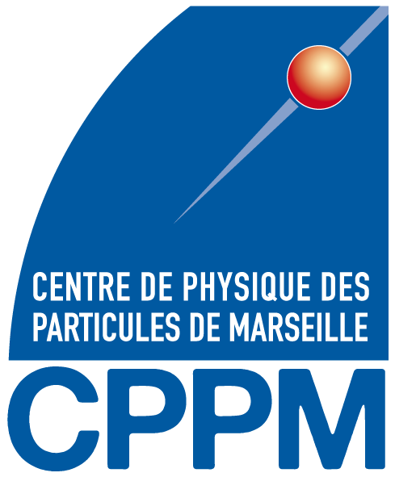
Difference Image Analysis
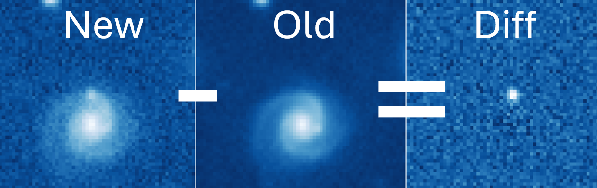
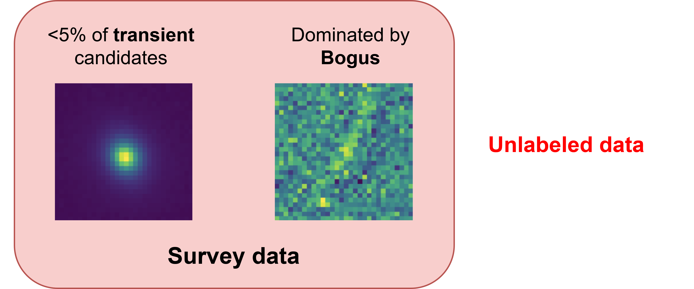
Weakly Supervised Learning Problem
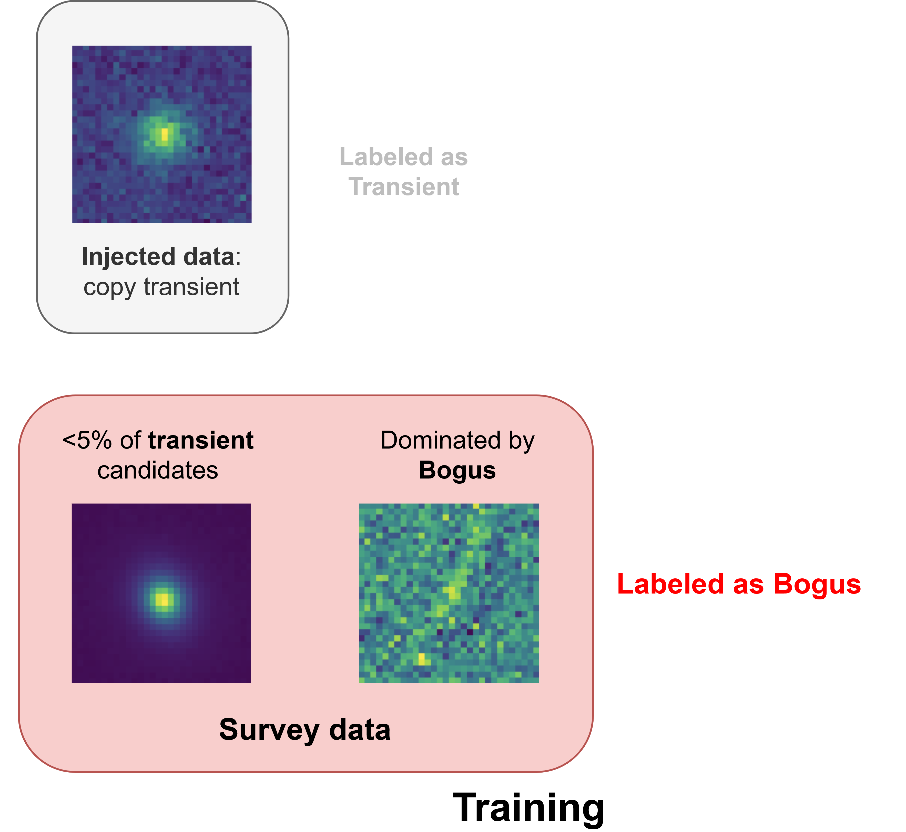
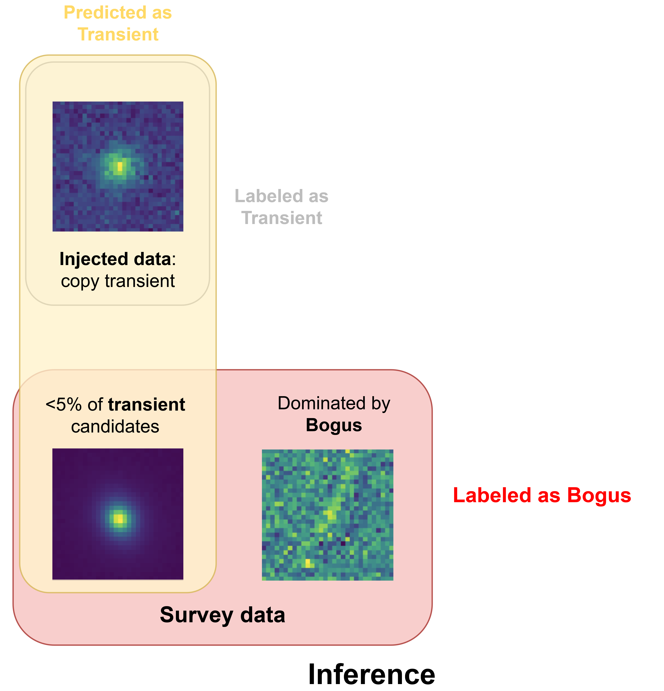
Training set
The HSC RC2 subset is composed of 6 detectors, with 8 visits per filter.Producing the Cutouts:
Classes and Labels:
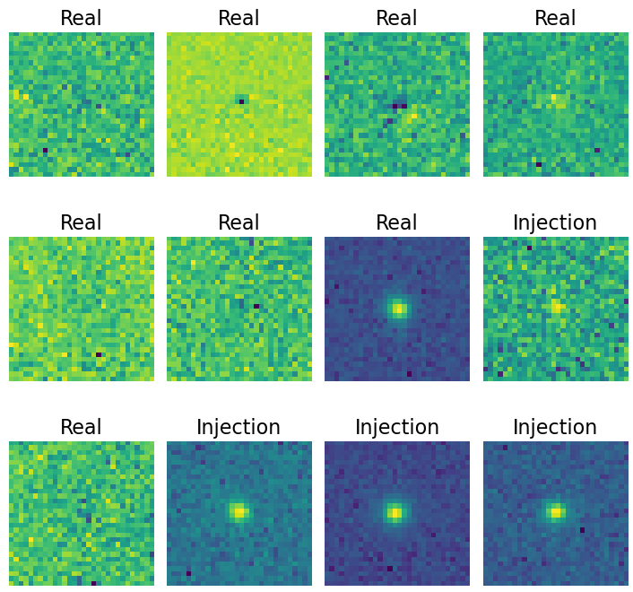
Construction of the evaluation set
Full UDEEP dataset: 862 visits, 103 detectors. Light curves are filtered and manually inspected.
Filtering steps: from 8M to 342 LCs
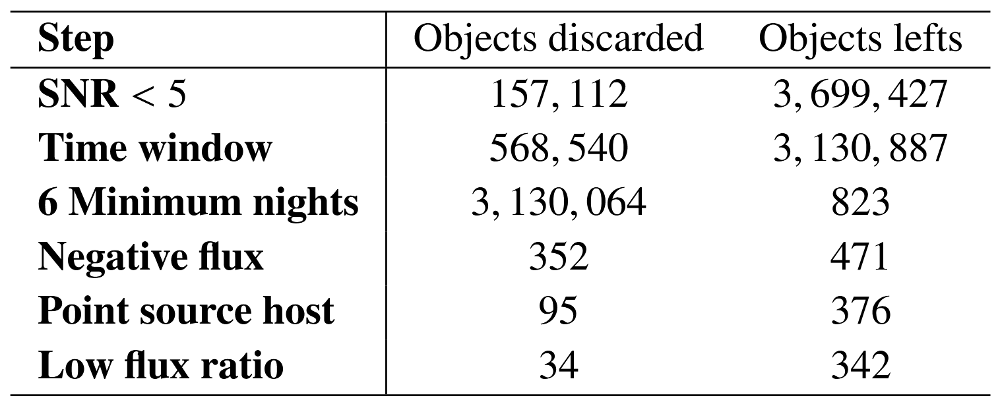
Human labeling:
- Labels:
- SN Ia: Transient: SNe Ia / transient candidates.
- Bogus: Bogus: bogus sources.
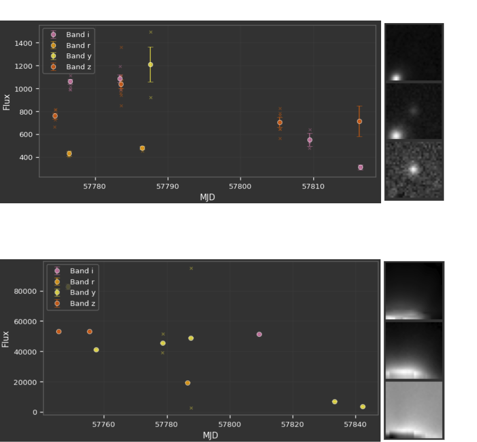
Network Architecture

Co-Teaching: A Self-Event-Selection Strategy for Weakly Supervised Learning
Two models are initialized and trained simultaneously on the same dataset.
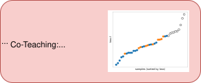
At each training iteration, each model selects a subset of training samples with the smallest loss.
Each network uses the small-loss samples selected by the other network to update its parameters.
Asymmetrical Co-Teaching
Two models are initialized and trained simultaneously on the same dataset.
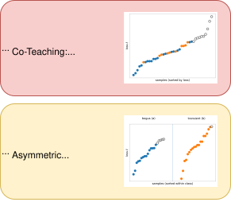
Key Changes:
- Implements different remembering rates for each class.
- Better fits the needs of our asymmetrically weakly supervised dataset.
Ensembles and MC Dropout for Uncertainty Quantification
Ensembles:
- Train multiple models with different initializations.
- Cost: T trainings and T inferences.
MC Dropout:
- Apply dropout during inference to simulate an ensemble of models.
- Cost: T inferences.
Predictive uncertainty (from variance of predictions):
\[ \hat{\mu}(x)=\frac{1}{T}\sum_{t=1}^{T}p_t(x), \qquad \widehat{\mathrm{Var}}(x)=\frac{1}{T-1}\sum_{t=1}^{T}\left(p_t(x)-\hat{\mu}(x)\right)^{2} \]
where \( p_t(x)=\begin{cases} \sigma(f_t(\mathbf{x}, \hat\theta_t)), & \text{for ensemble}\\ \sigma(f_t(\mathbf{x}, \hat\theta, z_t)), & \text{for MC Dropout} \end{cases} \)
UQ for Co-Teaching
Co-Teaching methods train two models simultaneously. Let's use them as an ensemble.
\( N=2\) ensemble is small, we can extend it by performing M stochastic forward passes with MC Dropout for each model, resulting in a total of \(N\times M\) predictions.
Metrics for Uncertainty Quantification
Calibration Metrics:
- Negative Log-Likelihood (NLL): quality of probabilistic predictions.
- Brier Score: MSE of probabilistic predictions.
- Expected Calibration Error (ECE): difference between predicted probabilities and observed frequencies.
Correlations with Physical Quantities:
- Correlations with Signal-to-Noise Ratio (SNR).
- Correlations with maximum brightness of a SNIa.
UQ analysis
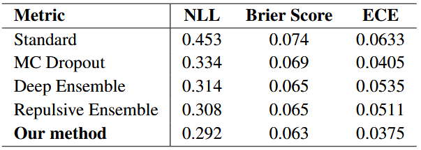
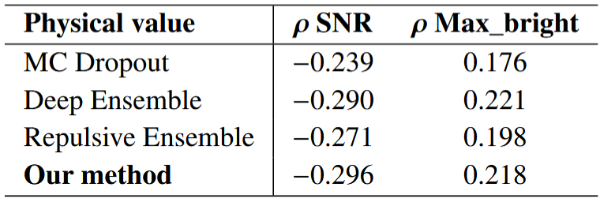
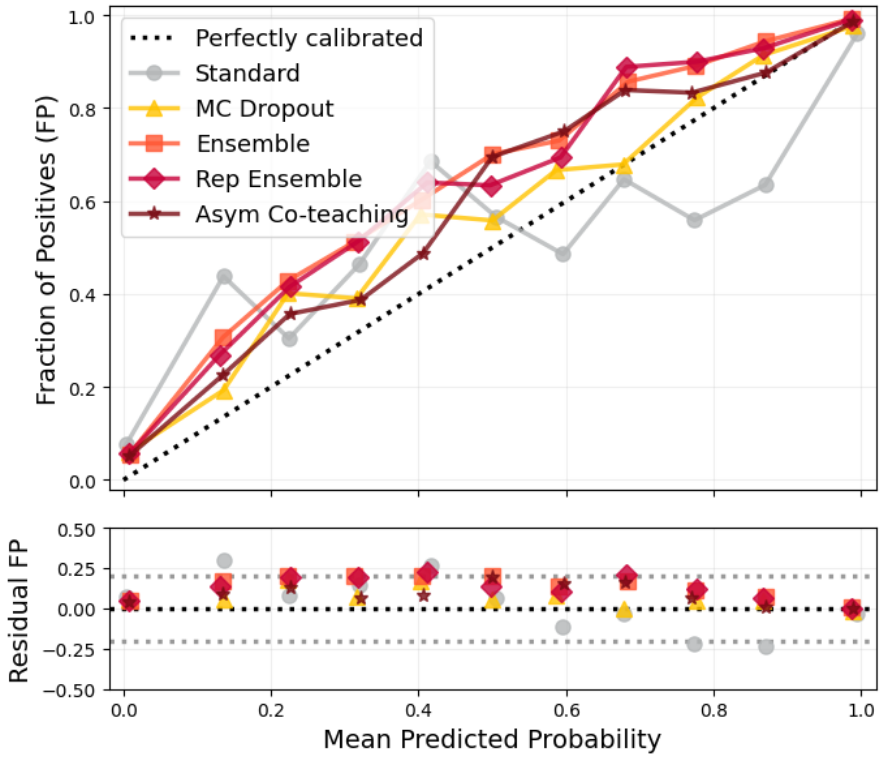
From source identification to light curve classification
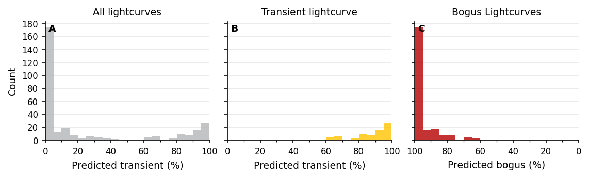
- From the validation set: 304/306 light curves are correctly labeled (99.35% accuracy) from the classification of their constituent sources.
- Most “bogus light curves” have all of their sources identified as bogus.
Using UMAP for NN latent space visualization
UMAP Overview:
- Preserves both local and global structure using non-linear dimensionality reduction.
- Builds a nearest-neighbors graph and optimizes it for lower dimensions.
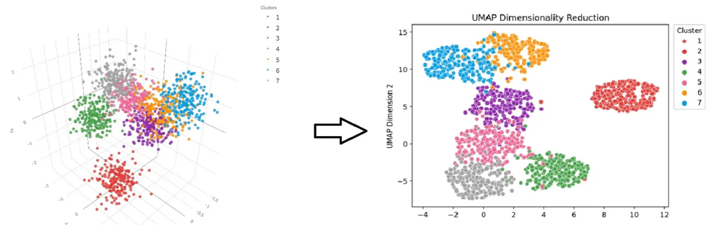
UMAP in our case:
Applied to the projection of inputs in the latent space of the network.UMAP projection of the validation set:
UMAP projection of the validation set with SNR overlay
UMAP projection of the validation set with UQ overlay
Outcomes of the project
- New Asym-Co-Teaching methods that allow mitigation of the risk in a high-stakes class.
- Novel uncertainty quantification method for Co-Teaching, providing better-calibrated uncertainties at lower cost.
- UMAP visualization of the latent space confirms our interpretation of global model behavior.
- Further exploration of the latent space to identify specific features or patterns associated with the bogus class.
- Expanding this work to upcoming datasets.
- Exploration of the systematic performance of MC–ensemble mixtures.
Thank you!
Backup Slides
Asymmetrical Co-Teaching
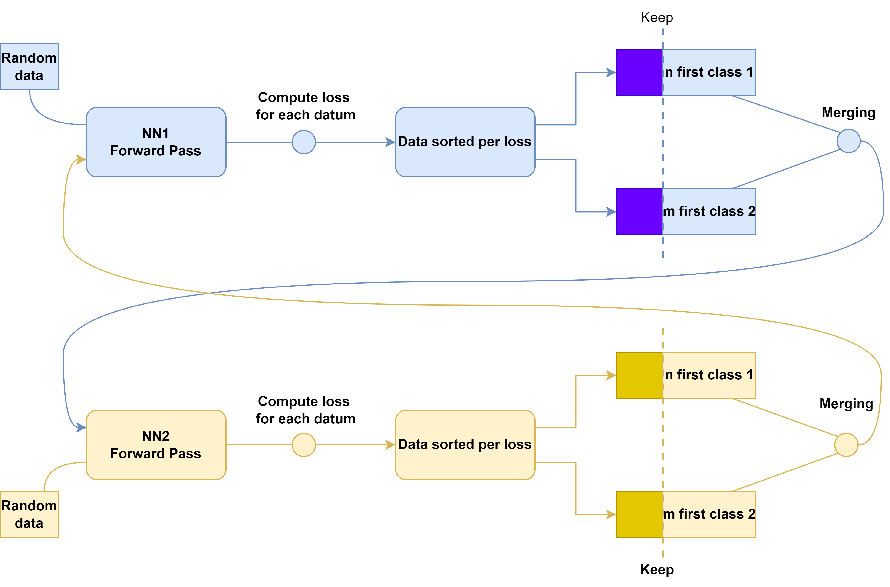
WSL analysis
DIA calibration is expected to improve over time and with better survey conditions.
Four different training sets with varying noise levels.
Our method outperforms standard training, especially in the noisiest setting.

Calibration Metrics
- Negative Log-Likelihood (NLL): quality of probabilistic predictions.
- Brier Score: MSE of probabilistic predictions.
- Expected Calibration Error (ECE): difference between predicted probabilities and observed frequencies.